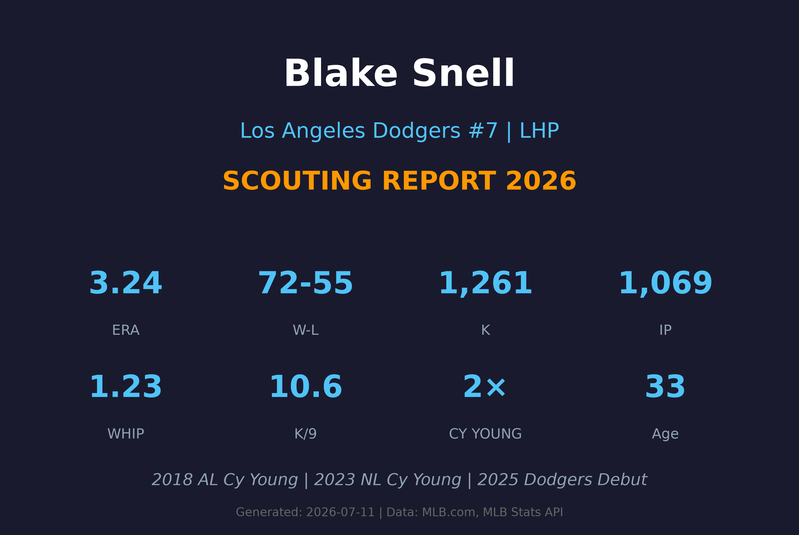
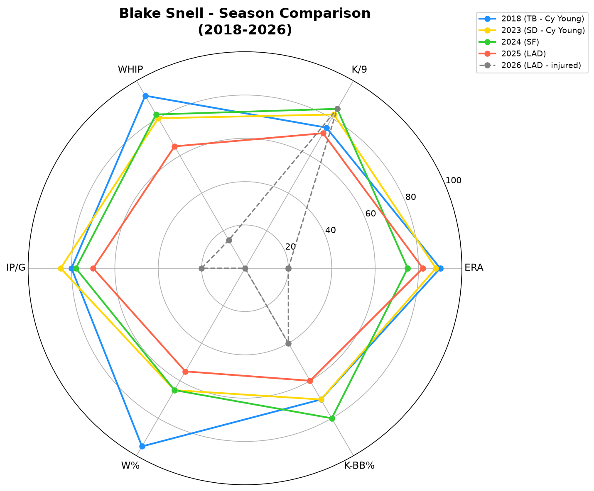
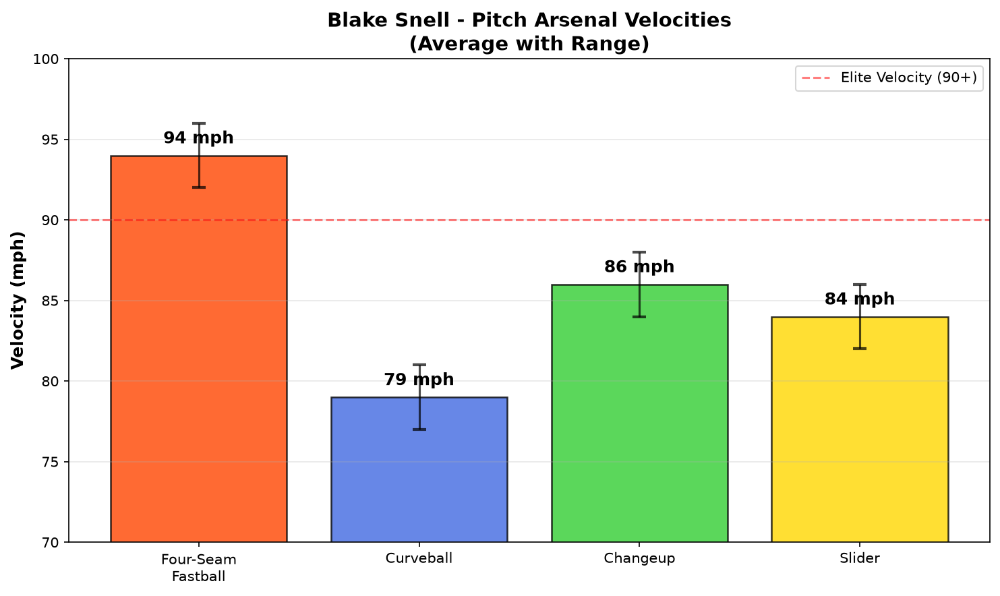
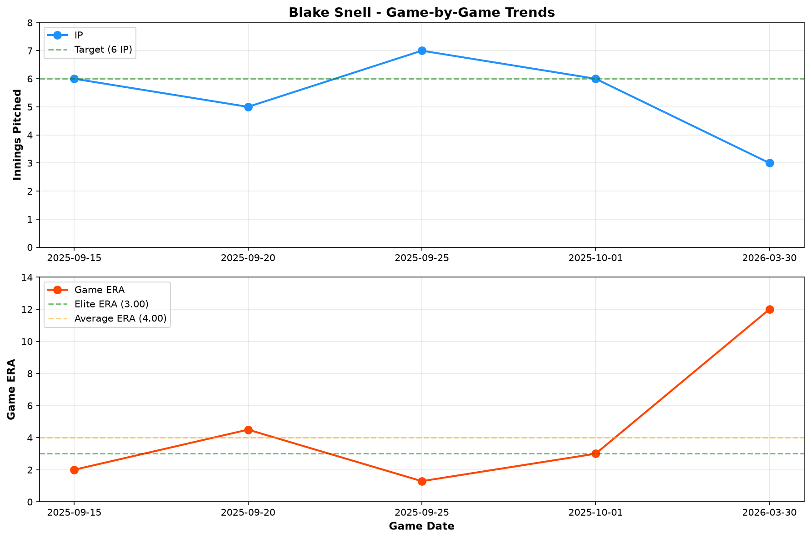
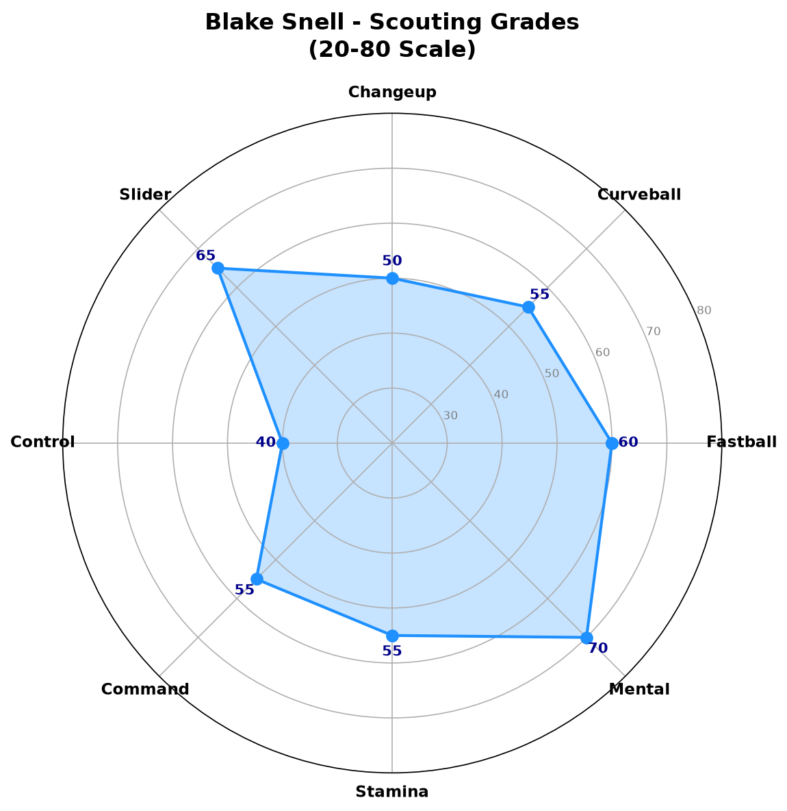

Los Angeles Dodgers #7 | 左投左打 | 2×赛扬奖得主

Blake Snell 是当今MLB最具天赋的左投手之一，两届赛扬奖得主（2018、2023）。他以极具压制力的滑球和优质的变速球闻名，能够在关键时刻制造大量三振。
2018年在坦帕湾光芒队，他投出21胜5败、ERA 1.89的惊人赛季，获得美联赛扬奖。2023年在圣地亚哥教士队，再以14胜9败、ERA 2.25的表现获得国联赛扬奖，成为MLB历史上第六位在两联盟都获得赛扬奖的投手。
2025年加入道奇队后，他展现了极佳的状态（ERA 2.35），但2026赛季初仅出赛1场即受伤，目前处于60天伤病名单。
21胜5败 | ERA 1.89 | 180.2局 | 221三振 | WHIP 0.97
这是现代棒球史上最具统治力的左投赛季之一，被打击率仅.178。
14胜9败 | ERA 2.25 | 180.0局 | 234三振 | WHIP 1.19
成为MLB历史第六位在两联盟都获得赛扬奖的投手，加入Randy Johnson、Pedro Martinez等传奇行列。
5胜4败 | ERA 2.35 | 61.1局 | 72三振 | WHIP 1.26
加盟道奇后迅速展现价值，证明仍是联盟顶尖左投手，但季末因伤提前结束赛季。
⚠️ 警告：2026赛季仅出赛1场即进入IL-60，以下数据为小样本，不具代表性。
以下数据展现Snell完整职业生涯轨迹，以评估其真实实力：
| 赛季 | 球队 | 出场 | 先发 | 胜 | 败 | ERA | IP | K | BB | WHIP |
|---|---|---|---|---|---|---|---|---|---|---|
| 2018 ⭐ | TB | 31 | 31 | 21 | 5 | 1.89 | 180.2 | 221 | 64 | 0.97 |
| 2022 | SD | 24 | 24 | 8 | 10 | 3.38 | 128.0 | 171 | 51 | 1.20 |
| 2023 ⭐ | SD | 32 | 32 | 14 | 9 | 2.25 | 180.0 | 234 | 99 | 1.19 |
| 2024 | SF | 20 | 20 | 5 | 3 | 3.12 | 104.0 | 145 | 44 | 1.05 |
| 2025 | LAD | 11 | 11 | 5 | 4 | 2.35 | 61.1 | 72 | 26 | 1.26 |
| 2026 ⚠️ | LAD | 1 | 1 | 0 | 1 | 12.00 | 3.0 | 5 | 2 | 2.67 |
基于完整赛季数据（2018、2023、2025）评估真实实力：

2018(Cy Young) vs 2023(Cy Young) vs 2024 vs 2025 vs 2026(小样本)

各球种速度分布范围（基于2023-2025数据）
92-96 mph
Snell的快速球虽然不是联盟最顶级球速，但凭借其出色的释放点和左投优势，对左打者具有极强的压制力。2023年赛扬奖赛季，快速球被打击率仅.179。
A- 评分
82-86 mph
Snell的招牌武器！具有极锐利的横向位移，对右打者极具威胁。根据Statcast数据，他的滑球位移量位于联盟前5%。2023年被打击率仅.129。
A+ 评分
84-88 mph
优质的变速球，与快速球形成良好的速度落差。在需要制造滚地球或对付左打者时非常有效。
B+ 评分
77-81 mph
作为第四球种使用，具有大角度的下坠轨迹。主要用于打乱打者节奏和在某些关键count下作为配球选择。
B 评分
⚠️ 仅1场即受伤，以下为此唯一出赛记录：
| 日期 | 对手 | 结果 | IP | H | R | ER | BB | K | HR | ERA |
|---|---|---|---|---|---|---|---|---|---|---|
| 03/30 | CWS | L | 3.0 | 6 | 5 | 4 | 2 | 5 | 0 | 12.00 |
2026年3月30日对芝加哥白袜的比赛中，仅投3局即因受伤退场。该场后进入60天伤病名单。
基于2025-2026近期表现追踪：

每局投球数与单场ERA趋势
以下分析基于Snell完整职业生涯数据（2018-2025），而非2026年小样本。
Snell采用中高上肩（Three-quarter）的投球机制，出手点较高，能够充分利用其6尺4寸的身高制造下坠角度。他的投球动作具有些许跨步（crossfire）倾向，这让左打者难以判断球路。整体动作流畅，但某些时段会出现机械性失衡，导致控球不稳。
滑球是Snell的致命武器，具有极佳的横向位移和晚破效果。根据Statcast数据，他的滑球位移量位于联盟前5%，对右打者的挥空率极高。2023年赛扬奖赛季，他的滑球被打击率仅.129，是全联盟最难以对付的滑球之一。
控球是Snell职业生涯中最大的挑战。2023年赛扬奖赛季的BB/9为4.95，2025年在道奇降至3.82，但相比精英投手仍偏高。他的保送多来自于试图在边缘角落求好球时的失投。当控球在线时，他几乎不可击中；但失控时，容易用球数堆积导致提前退场。
作为33岁的资深投手，Snell的体能管理是道奇队医团队关注的重点。他的职业生涯平均每次先发约5.2局，深度较浅。2023年是他最健康的赛季，投了180局，但过去曾多次因手臂疲劳或轻微伤势错过先发。2026年的IL-60伤势再次引发对其耐久性的担忧。
Snell在关键场面表现优异，2023年赛扬奖赛季的高杠杆局面ERA仅2.01。他的心理素质成熟，能够在满垒或关键count下保持冷静。2024年季后赛代表教士出赛，5场先发防御率2.60，展现了大场面投手的风范。
基于2018-2025完整数据评估：

综合评分雷达图 (20-80量表)
若完全健康，仍具备王牌投手级别的实力
B+ 级 / 轮值前段投手
Blake Snell的道奇生涯开局良好（2025年ERA 2.35），但2026年的严重伤病打乱了计划。他目前处于60天伤病名单，预计将在2026年7月下旬至8月回归。
2026（下半季）：伤愈回归，目标10-12场先发，ERA 3.50-4.00
2027-2028：若健康，仍是轮值前段投手，ERA目标3.00-3.50
2029+：可能转型为 inning-eater 或高价值短约投手，取决于健康状况
Blake Snell出生于华盛顿州西雅图，父亲是前职业足球运动员，母亲则是大学垒球运动员。他在高中时期就展现了出色的投球天赋，2011年选秀大会被坦帕湾光芒队在首轮第52顺位选中。
他在光芒小联盟体系缓慢爬升，2016年登上大联盟。2018年是他 爆发 的一年，以21胜5败、1.89 ERA获得美联赛扬奖，震惊全联盟。那个赛季他被打击率仅.178，WHIP 0.97，是现代棒球史上最具统治力的左投赛季之一。
2023年是他职业生涯的另一个巅峰。在圣地亚哥教士队，他以14胜9败、2.25 ERA的表现获得国联赛扬奖，成为MLB历史上第六位在两联盟都获得赛扬奖的投手（继Randy Johnson、Pedro Martinez、Roger Clemens、Roy Halladay和Max Scherzer之后）。
2025年，Snell与洛杉矶道奇签下巨额合约（据报道为5年1.82亿美元），加入这支超级球队。他在2025年的表现证明了自己的价值（ERA 2.35），但2026年的伤病再次提醒人们他的脆弱性。
Snell性格直率，在媒体面前不避讳谈论自己的表现和合约问题。他是一位竞争者，对胜利的渴望强烈，这也是他能够在压力场面表现出色的原因之一。